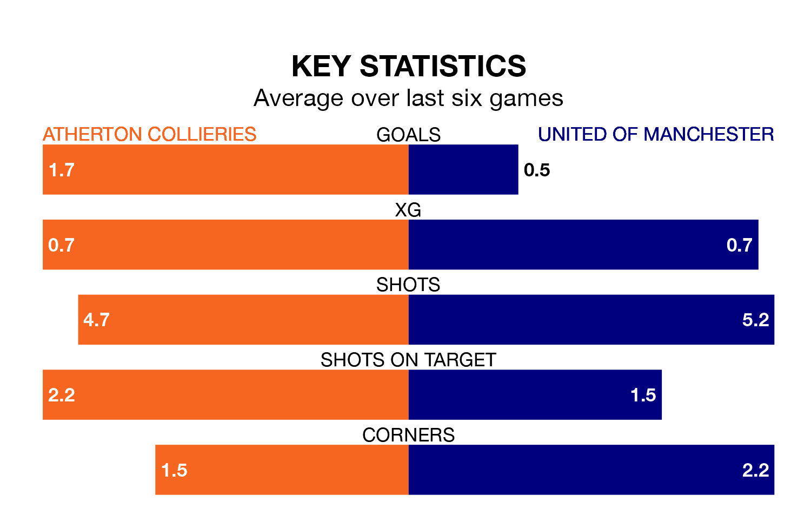

Atherton Collieries and United of Manchester will both be looking for points in Saturday's kick-off to end their losing streaks.
The two teams have both gone three Northern Premier League games without a win. Atherton Collieries have picked up just four points from their last six games, while United of Manchester have earned just three.
Atherton Collieries are bottom of the table after 32 games, of which they have won five and drawn four, earning 19 points.
United of Manchester are five places ahead of the home team in 17th, with 11 wins and four draws putting them on 37 points.
In the last 10 years, Atherton Collieries and United of Manchester have played each other on eight occasions. Atherton Collieries won four of them, United of Manchester three, and they drew once.
On average, Atherton Collieries scored 1.4 goals and F.C. United 1.2 in those matches.
Their last meeting was on October 24, when Atherton Collieries won 2-0 away.
With 41 goals in 32 games so far this season, Atherton Collieries are scoring at below the league average rate with 1.3 goals per game. And they are conceding more than average, letting in 81 goals at a rate of 2.5 per game.
F.C. United are also below average scorers, with 1.4 goals per game, compared to a league average of 1.6. They have conceded 2.0 goals per game.
Atherton Collieries's last match was on March 9, a 2-1 loss against Morpeth Town.
United of Manchester lost 3-1 against Workington last time out, on March 2.
Updated: 15:10 (UTC), 15/03/24